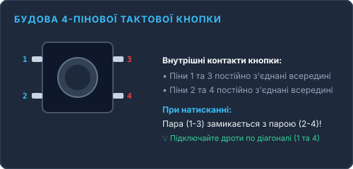
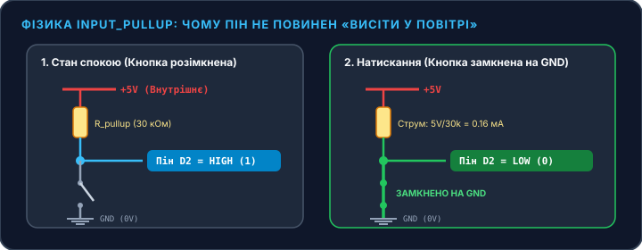

Тактова кнопка з антибрязкотом (Pushbutton Controller)
Перехід від простого виведення світла до справжньої інтерактивності. Дізнайтеся, як мікроконтролер фіксує дію людини, чому вхід без підтяжки перетворюється на «радіоантену» з випадковим шумом, як внутрішній резистор INPUT_PULLUP спрощує схему та як за 50 мс приборкати фізичний брязкіт контактів.
Навіщо кнопці потрібен внутрішній резистор підтяжки?
Коли ви підключаєте вихідний пристрій (як світлодіод у Проєкті #01), мікроконтролер сам генерує чіткі 5V або 0V. Але коли контакт налаштовано як вхід (INPUT), виникає фізична пастка: якщо кнопка не натиснута, провід буквально висить у повітрі (стан Floating Pin). При вхідному опорі у гігаоми цей контакт діє як антена — ловить статичні електромагнітні наведення з кімнати, а плата хаотично фіксує хибні спрацьовування!
Замість того, щоб паяти на макетку зайвий зовнішній резистор на 10 кОм, ми використаємо вбудовану апаратну можливість чіпа ATmega328P: режим INPUT_PULLUP. Мікроконтролер сам підключає внутрішній опір ~30 кОм до шини +5V. Контакт надійно «підтягнутий» до логічної одиниці (HIGH), а при натисканні кнопки замикається на землю GND і дає чіткий нуль (LOW).
Схеми монтажу тактової кнопки та світлодіода
Офіційний Fritzing-стандарт, віртуальне моделювання в Tinkercad та реальне фото обладнання

Стандартна макетна схема: кнопка перемикає цифровий вхід D2 на GND, світлодіод підключено через струмообмежувальний резистор 220 Ом.

Інтерактивний симулятор тактової кнопки
Натискайте віртуальну кнопку та спостерігайте за логікою сигналів у реальному часі
ledState = !ledState на протилежну. Програмний антибрязкіт ігнорує будь-які коливання контактів коротші за 50 мілісекунд, забезпечуючи чітке й комфортне вмикання!
Чекліст комплектуючих та інженерна анатомія
Все, що необхідно мати на столі для успішної збірки Проєкту #02
Arduino UNO R3
1 шт. • Входи D2, D12, GNDЗчитує логічний рівень на цифровому піні D2 та керує світлодіодом через вихід D12.
Тактова кнопка (6×6 мм)
1 шт. • 4 ніжки, нормально відкритаЗамикає електричний контакт при фізичному натисканні кнопки та відпускає при знятті зусилля.
Світлодіод 5 мм (LED)
1 шт. • Індикаторний вихідВізуалізує стан перемикача: Анод (+) до піна D12 через резистор, Катод (-) до GND.
Резистор 220 Ом
1 шт. • Для світлодіода (🔴🔴🟤🟡)Обмежує струм світлодіода. Зверніть увагу: для кнопки зовнішній резистор не потрібен завдяки INPUT_PULLUP!
Макетна плата (Small)
1 шт. • З центральною канавкоюЦентральна канавка шириною 7.62 мм розділяє виводи кнопки, запобігаючи паразитному короткому замиканню.
З'єднувальні дроти
3 шт. • Жовтий, Зелений, ЧорнийЖовтий дріт — сигнал кнопки D2; Зелений — сигнал світлодіода D12; Чорний — спільна шина заземлення GND.
1. Секрет внутрішньої комутації 4-пінової кнопки
Чому 4 контакти, але тільки 2 виводи?

Поширена помилка початківця — вважати, що 4 ніжки кнопки незалежні. Насправді ніжки 1 і 3 з'єднані між собою металевою перемичкою всередині завжди, так само як 2 і 4!
2. Фізика режиму INPUT_PULLUP: захист від наведень
Чому при відпущеній кнопці значення HIGH, а при натиснутій — LOW?

У режимі INPUT_PULLUP струм спокою дорівнює мізерним I = 5 В / 30 000 Ом ≈ 0.16 мА. Це повністю захищає плату від короткого замикання при натисканні на кнопку та усуває необхідність у додаткових резисторах на макетній платі.
Покроковий монтаж схеми без помилок
Дотримуйтесь правильного розташування кнопки через роздільну канавку
- Додайте деталі: Перетягніть на робоче поле Arduino Uno R3, Breadboard Small, Pushbutton (кнопку), LED та Resistor на 220 Ω.
- Встановіть кнопку: Помістіть тактову кнопку точно посередині макетки, щоб вона перекривала центральну канавку (між рядками e та f).
- Підключіть сигнальний дріт D2: Клікніть на верхній лівий контакт кнопки (Terminal 1a) та протягніть жовтий дріт до піна D2 на Arduino.
- Підключіть заземлення кнопки: Клікніть на протилежний по діагоналі нижній правий контакт кнопки (Terminal 2b) та протягніть чорний дріт до гнізда GND на Arduino.
- Встановіть світлодіод: Анод діода через резистор 220 Ω з'єднайте з піном D12, а катод — із шиною GND.
- Запустіть симуляцію: Вставте код нижче у вкладку «Code» (режим Text) та натисніть «Start Simulation».
- Знеструмте плату: Витягніть USB-кабель із комп'ютера перед монтажем компонентів.
- Вставте кнопку: Втисніть тактову кнопку в отвори макетної плати так, щоб її ніжки перекинулися через центральну роздільну канавку (ряди 10-12). Переконайтеся, що вона сіла щільно.
- Сигнал кнопки: Вставте жовтий дріт у рядок макетки з ніжкою 1 кнопки, а інший кінець — у гніздо D2 на Arduino.
- Земля кнопки: Вставте чорний дріт у рядок діагональної ніжки 4 кнопки, а інший кінець — у спільне гніздо GND на Arduino.
- Світлодіод та резистор: Довгу ніжку LED (анод) з'єднайте через резистор 220 Ом із піном D12, а коротку ніжку (катод) — із GND.
- Прошивка: Підключіть USB, виберіть плату та COM-порт в Arduino IDE і завантажте скетч!
Таблиця точної комутації пінів
| Компонент | Контакт на макетці | Пін на Arduino UNO | Колір дроту | Фізичне призначення |
|---|---|---|---|---|
| Тактова кнопка | Ніжка 1 (Кут A) | Пін D2 | Жовтий | Вхід сигналу з внутрішньою підтяжкою до +5V |
| Тактова кнопка | Ніжка 4 (Кут D, діагональ) | Пін GND | Чорний | Замикання піна D2 на нуль (0V) при натисканні |
| Світлодіод 5 мм | Анод (+) через 220 Ом | Пін D12 | Зелений | Індикаторний вихід стану тумблера |
| Світлодіод 5 мм | Катод (-) пряме з'єднання | Пін GND | Чорний | Спільна шина заземлення |
Робочий C++ скетч з антибрязкотом (Debounce Toggle)
Повний код кнопки-тумблера з фільтрацією механічного брязкоту контактів
// SimpleArduino — Проєкт #02: Тактова кнопка з антибрязкотом
// Кнопка: пін D2 до GND (режим INPUT_PULLUP)
// Світлодіод: пін D12 через резистор 220 Ом до GND
const int BUTTON_PIN = 2; // Пін підключення тактової кнопки
const int LED_PIN = 12; // Пін підключення світлодіода
bool ledState = false; // Поточний стан світлодіода (true = світить, false = згас)
int buttonState = HIGH; // Підтверджений стабільний стан кнопки
int lastButtonState = HIGH; // Попередній миттєвий стан піна
unsigned long lastDebounceTime = 0; // Час останнього коливання контакту
const unsigned long debounceDelay = 50; // Поріг фільтрації брязкоту (50 мілісекунд)
void setup() {
// Активація внутрішнього підтягувального резистора 30 кОм до +5V
pinMode(BUTTON_PIN, INPUT_PULLUP);
// Налаштування піна світлодіода як вихід
pinMode(LED_PIN, OUTPUT);
digitalWrite(LED_PIN, LOW); // Початково світлодіод вимкнено
}
void loop() {
int reading = digitalRead(BUTTON_PIN); // Зчитуємо миттєвий сигнал піна
// Якщо стан сигналу змінився (початок натискання або вібрація) — скидаємо таймер
if (reading != lastButtonState) {
lastDebounceTime = millis();
}
// Якщо сигнал залишається незмінним довше 50 мс — це справжнє натискання!
if ((millis() - lastDebounceTime) > debounceDelay) {
// Якщо підтверджений стабільний стан дійсно змінився
if (reading != buttonState) {
buttonState = reading;
// Спрацьовуємо тільки при натисканні (перехід у стан LOW)
if (buttonState == LOW) {
ledState = !ledState; // Перемикаємо стан тумблера
digitalWrite(LED_PIN, ledState ? HIGH : LOW);
}
}
}
lastButtonState = reading; // Зберігаємо для порівняння на наступному кроці
}🔍 Анатомія коду «на хлопський розум»:
Вмикає вхідний пін і автоматично з'єднує його з внутрішнім резистором 30 кОм до +5V. Контакт ніколи не висить у повітрі, тому шуми й наведення більше не страшні.
Запитує мікроконтролер: «Яка напруга на піні D2 прямо зараз?». Якщо кнопку відпущено — повертає HIGH (5V). Якщо натиснули — повертає LOW (0V).
Всередині кнопки стоїть крихітна пружна металева пластинка. При ударі вона пружинить і вібрує 5–10 мілісекунд, замикаючись і розмикаючись десятки разів. Контролер фіксує це як 20 окремих натискань за мить!
Програмний фільтр: ми кажемо Arduino: «Ігноруй будь-яке тремтіння. Якщо сигнал тримається стабільно 50 мс — це точно палець людини, а не вібрація металу».
Швидка допомога: розв'язання 4 помилок із кнопкою (Troubleshooting)
Причина: Ви випадково написали pinMode(BUTTON_PIN, INPUT) замість INPUT_PULLUP. Пін висить у повітрі та зчитує електромагнітне поле руки, як антена.
Причина: Дроти кнопки підключені до двох ніжок з одного боку, які вже з'єднані всередині кнопки. Переставте один дріт строго по діагоналі через центральний проріз макетної плати.
Причина: Занадто малий час затримки антибрязкоту. Збільште константу debounceDelay у коді з 50 до 80–100 мілісекунд.
Причина: Перевірте полярність світлодіода. Довга ніжка (+) повинна йти через резистор 220 Ом до піна D12, а коротка (-) — до гнізда GND. Розверніть LED на 180°.
Перевірте себе: запитання про фізику входів
Яке значення повертає функція digitalRead(pin) у режимі INPUT_PULLUP, коли кнопка підключена до GND і її НАТИСНУТО?